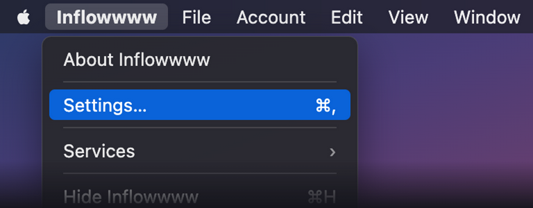

Inflowwww didn't load. Fix the URL or token, then Save & Open to retry.
Connect to Inflowwww
Enter your Inflowwww server and your share link token. Inflowwww may then
ask you to sign in with your own username and password — a separate,
normal step; the token only gets the app to the door.
This is the t= value from your Inflowwww link.

Reopen it anytime from the Inflowwww menu → Settings… (⌘,)
Turn hardware acceleration off if windows go blank or crash. Turn secure DNS on if the app
can't reach your server on this network. Both apply after a restart.